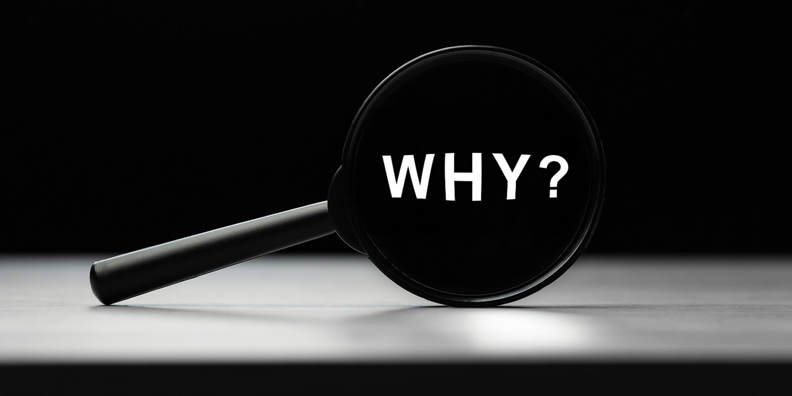

საიტი ემსახურება ცნობიერების ამაღლებას იმასთან დაკავშირებით, თუ რისი გაკეთება შეუძლია ადამიანს უკეთესი ცხოვრებისათვის. ეს შეასაძლოა უკავშირდებოდეს ყოველდღიური ცხოვრების სტილს, შესაძლოა ჩვენმა "მავნე ჩვევებმა" ზიანი მიაყენოს საცხოვრებელ გარემოს, სადაც ჩვენთან ერთად სხვებიც ცხოვრობენ. ამიტომ, არ უნდა ვიფიქროთ, რომ თუნდაც ერთი დაგდებული ბოთლი სხვისი პრობლემა არ გახდება. მნიშვნელოვანია, რომ ყველამ მიიღოს მონაწილეობა საცხოვრებელი გარემოს გაუმჯობესების პროცესში, თავისთავად მხოლოდ ერთი ადამიანი ვერ შეძლებს ყველაფრის მარტო გაკეთებას, ამაში მას სხვებიც დასჭირდება.
რა არის საიტის შექმნის მიზეზი?
საიტის შექმნის მიზეზი არის ის, რომ ეკოლოგიური მდგომარეობა დღითიდღე უარესდება, რაც ყველა ცოცხალ არსებას ეხება, არამარტო ადამიანებს. ჩვენმა ერთმა ქმედებამ შესაძლოა ცუდი რამ გამოიწვიოს, განსაკუთრებით მაშინ როდესაც ქმედება მიიღებს სისტემატიურ ხასიათს. ჩვენნაირად კიდევ ბევრი იფიქრებს "ამით რა დაშავდებაო", მაგრამ ბევრი ვერც ხვდება ამ ფრაზის საშიშროებას. რა თქმა უნდა ყოველთვის ვერ შვძლებთ თავის შეზღუდვას ყველაფერში, თუმცა შეგვიძლია გარკვეულად შევამციროთ რისკი. მთავარია მონდომება და ჩართულობა. ხანდახან არის შემთხვევებიც როდესაც ადამიანი ვერ ხვდება და ისე ვნებს გარემოს, ასე რომ არ მოხდეს საჭიროა ცნობიერების ამაღლება, სხვაგვარად არ გამოვა.

რა წვლილი შეგიძლია შეიტანო?
ყველას გვაქვს ვალდებულება, რომ გავუფრთხილდეთ საცხოვრებელ გარემოს, ამიტომ საჭიროა ვიცოდეთ თუ რა უნდა გავაკეთოთ. ასევე ჩვენი მისიაა, რომ ჩავრთოთ ამაში სხვებიც, ესეც მნიშვნელოვანია. შესაძლოა პიროვნებამ ბევრი რამ ვერ გააკეთოს, მაგრამ სხვები მოანდომოს და ჩართოს თავის საქმეში, რაც არაა მარტივი დავალება. თითოეული ადამიანის აქტიურობა მნიშვნელოვანია. გადადი "მთავარ" გვერდზე, გაეცანი ინფორმაციას და შესაძლოა თავადაც გაგიჩნდეს იდეები თუ როგორ მოგვარდეს საკითხი, წარმატებები!
რა არის ფონდის "save with us"-ს მიზანი?
ფონდის მიზანია მთელ საქართველოში ეკოლოგიური პრობლემების აღმოფხვრა, ტყე-პარკების შექმნა, მოვლა, განვითარება და ნაგვისგან გარემოს გასუფთავება. წინა წლებთან შედარებით ვითარება გაუარესდა, ტყეები გაიჩეხა, ჰაერი, მიწა, წყალი დაბინძურდა, ამის გამო კი მრავალი ადამიანი დაავადდა. ვფიქრობთ, რომ ეს უნდა გამოსწორდეს, ამისი შანსი არსებობს, მთავარია ამაში ყველა ჩაერთოს. შემოგვიერთდი და ერთად გადავარჩინოთ პლანეტა!